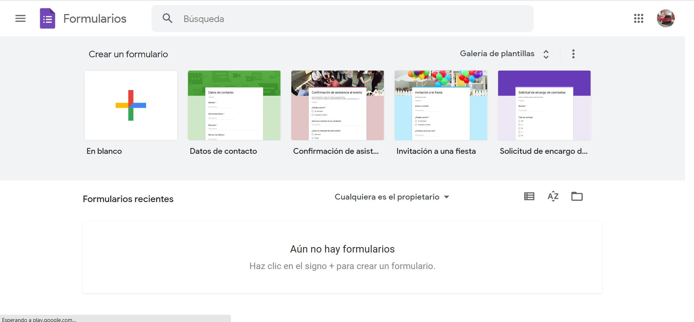
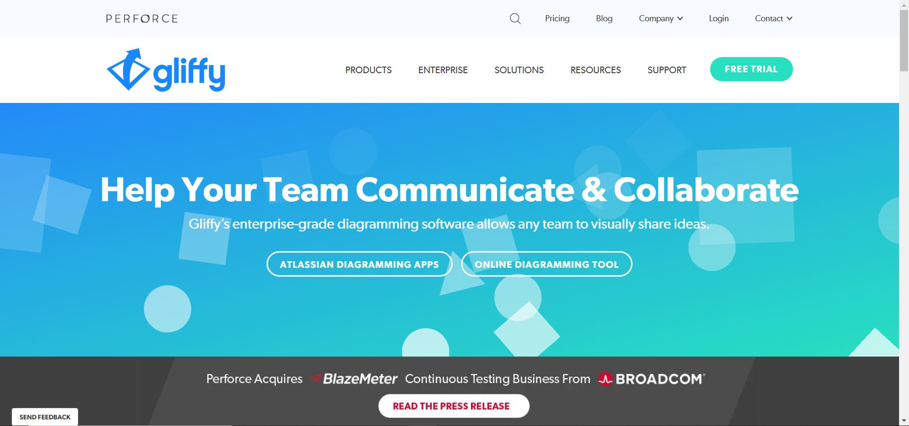

La mitad de los usuarios tienen algún tipo de problema o dificultad para poder acceder a las aplicaciones o a la web.
La WAI es la iniciativa de usabilidad de la Web promovida por el consorcio web, y pretende ofrecer una guía estándar para todos los desarrolladores de navegadores, webs y herramientas.
Las técnicas están reunidas en este documento, al que se le hace referencia para cada uno de los casos:
https://www.w3.org/TR/WAI-WEBCONTENT-TECHS
Así como en esta guía que resume técnicas que deben facilitar los navegadores:
También hay definidos unos estándares para dispositivos móviles, que son más recientes:
https://www.w3.org/WAI/standards-guidelines/mobile/
A continuación vamos a detallar algunos ejemplos de usuarios o escenarios que se reflejan en la WAI.
El daltonismo o ceguera en colores ocurre cuando un usuario no es capaz de distinguir colores como el rojo y verde o azul y amarillo. Eso supone, que si un usuario no ve correctamente los colores, es posible que no sea capaz de ver bien todo el contenido de la web.
Solución
Para solucionar este problema, debemos de usar colores que contrasten (cómo por ejemplo el amarillo y el azul) usando una hoja de estilos externa para que el usuario pueda alterar los colores.
Midnight Lizard es una herramienta que se instala en el navegador y nos permite cambiar los colores de una web.
La discapacidad de manos supone desde una descoordinación motora de los dedos, manos o brazos o ausencia de ellos. Normalmente este tipo de usuarios suelen usar un ratón especial y un sistema de reconocimiento por voz.
Solución
Para solucionar este problema podemos usar un teclado en pantalla y además facilitar al usuario Access Keys (atajos de teclado), para acceder a las secciones de la web de forma fácil y rápida.
Con la herramienta de Teclado Virtual, cómo su nombre indica, nos permite añadir de forma fácil y rápida un teclado por pantalla. A parte, esta herramienta incluye un selector de idioma, con el cual puedes seleccionar la distribución de teclado que queremos que se muestre.
Una persona sorda no es capaz de escuchar los sonidos que suceden a su alrededor. Eso a la hora de navegar por una web, solo le afectan los contenidos multimedia.
Solución
La mejor solución para este tipo de usuarios es proporcionar subtítulos a todos los vídeos de nuestro sitio web.
Una persona jubilada, es una persona que poco a poco va perdiendo cualidades (la vista, la destreza, la atención, el oído e incluso la memoria).
Solución
Para solucionar este problema, a la hora de diseñar las interfaces web, debemos de tener en cuenta el uso de interfaces sin movimiento, con textos e imágenes a buena escala.
En este enlace podemos ver un documento de la WAI sobre cómo las personas con discapacidad utilizan la web:
https://www.w3.org/WAI/people-use-web/es
Además de los perfiles vistos anteriormente, la WAI puede clasificar los tipos de usuarios de forma más genérica según sus impedimentos:
La edad causa que de forma irremediable se suman problemas de vista, de habilidad, de oído, etc., y también el tener que adaptarse a los cambios y nuevas tecnologías.
Por ejemplo, un abuelo que aún maneja un nokia tendrá problemas para adaptarse al iPhone nuevo que sus nietos le han regalado.
Los impedimentos a veces no vienen solos y se pueden acumular. Por ejemplo, una persona que tenga tanto problemas de visión como de audición.
El hecho de tener buena salud, no nos referimos a estar físicamente bien. Se pueden tener problemas de aguante, de concentración o destreza. Ya no es el hecho de tener una discapacidad, sino estar fatigado o dolorido.
Por ejemplo, un administrativo sin discapacidad, pero sufre de migrañas (dolores de cabeza), y eso hará que haya días que no rinda al máximo en el trabajo.
También pueden salir impedimentos cuando las habilidades no se mantienen constantes. Puede ocurrir que las condiciones de un usuario cambie de repente.
Por ejemplo, una persona que siempre ha tenido un iPhone, se le rompe y no le queda otra que comprarse un Samsung. Tendrá problemas al adaptarse a un dispositivo distinto.
Estos impedimentos le pueden ocurrir a cualquier persona a lo largo de su vida, ya sea causado por un accidente, enfermedad o medicación. Normalmente, es aquí cuando una persona sin discapacidades es consciente de los impedimentos que sufre una persona con discapacidad.
Por ejemplo, un programador que está en la oficina se pilla violentamente la mano contra una puerta y se rompe un dedo. A la hora de teclear no lo podrá hacer de forma habitual.
Estos impedimentos no les afectan a las personas de forma directa, sino que son producidos por los dispositivos que se dispone, de la infraestructura, de la capacidad de la red…
Por ejemplo, cuando en un instituto hay una gran demanda de red, ésta se ralentiza o se cae.
En la iniciativa WAI se identifican una serie de barreras para los usuarios con algún tipo de limitación. Vamos a clasificarlas según el tipo de impedimento del usuario. Debes tener presente que muchas de estas características pueden parecer inofensivas, pero que precisamente para ciertas personas se convierten en auténticas barreras para el uso de interfaces.
Problemas auditivos
Problemas cognitivos o neurológicos
Problemas físicos
Problemas en la vista
Problemas en el habla
Los móviles se han metido en los bolsillos de los usuarios y aunque muchos de los principios mencionados en la sección anterior también sirvan, por sus características especiales merecen un apartado diferente.
En la WAI se han reunido información a este respecto.
En general también rigen principios como que las interfaces sean perceptibles, operables, entendibles y robustas, pero las buenas prácticas que se sugieren cambian, teniendo en cuenta que las capacidades de interacción son menores…
Esto debe ser un requisito imprescindible en el desarrollo de sitios y aplicaciones por una serie de motivos que conviene recordar. Algunos de ellos se deducen en lo dicho hasta ahora.
La Web, los dispositivos y los sistemas operativos. Todos ellos juntos deben formar un sistema distribuido en el que conviven cualquier tipo de tecnologías.
Para que puedan operar entre ellas, da igual quién fabrica cada aplicación, lo importante es que deben seguir unas pautas comunes para que a la hora de que una aplicación realice una tarea, el resto se coordine y la pueda seguir.
Por ejemplo, un documento de Word que se guarda en una carpeta del sistema operativo Windows 10 que decidimos subir a una nube llamada Google Drive.
Lo hemos visto en el tema anterior. El Consorcio Web es el encargado de establecer las pautas para hacer las webs más accesibles. Además de pautas, ofrece mecanismos de accesibilidad a los lenguajes HTML y CSS para que se puedan aplicar en las webs:
Por ejemplo, podemos utilizar las técnicas ARIA para realizar una página web lo más accesible posible
Usar CSS para modificar la presentación de la página web nos puede dar enormes ventajas:
El uso de estándares externos va a facilitar el mantenimiento de las aplicaciones, ya que no dependen de los caprichos de las empresas y encima estarán consensuados por el consorcio web.
Los estándares abiertos permiten que existan muchas más herramientas de desarrollo. herramientas auxiliares y toda clase de programas alrededor de esos estándares.
Hasta los estándares unifican el desarrollo de aplicaciones en los móviles, donde ya se han creado proyectos de programación de aplicaciones multiplataforma que se pueden abrir en cualquier dispositivo, todo gracias al uso de estándares.
Usabilidad es un atributo de calidad que mide lo fáciles de usar que son las interfaces Web.
Sea por la web o no, la usabilidad consiste en facilitar la navegación a los usuarios de nuestra página para que en definitiva consigan de manera clara lo que buscan.
Los principios básicos sobre los que se sustentan la usabilidad son:
Estas son algunas de las normas esenciales para facilitar el uso:
Legibilidad.
Facilitar la legibilidad de los textos: tipos y tamaños de letra. contraste texto/fondo, textos más cortos. Este es un ejemplo de diferencia entre legibilidad de distintas fuentes y variantes.
Organización.
Se trata de lograr una adecuada organización de las páginas: un sitio web o una aplicación debe estar claramente estructurada.
Navegación ágil.
Se trata de que la interfaz no resulte pesada, por lo tanto, se debe procurar un tamaño reducido de las imágenes y ficheros vinculados, etiquetas, texto alternativo… Más adelante se presentarán técnicas para optimizar interfaces.
Accesibilidad.
Consiste en que la tecnología empleada no sea una barrera de entrada para nadie, ya que como se está mostrando en este capítulo, existen muchas trabas que se pueden evitar para usuarios con cualquier tipo de dificultad.
Las interfaces y, en especial, en el caso de las interfaces Web deben cumplir con una serie de estándares y usos comunes. Puede que en algunos casos los usos comunes puedan cambiarse por el diseño, pero incluso en estos casos hay que mantener los usos.
Los usuarios vienen con unas costumbres adquiridas, algunas de ellas tan básicas como la forma en la que se lee el texto.
Izquierda a derecha.
Acostumbramos a leer de izquierda a derecha y de arriba a abajo, al menos en occidente. Eso es algo que hay que tener muy en cuenta, no solo para leer y para alinear el texto a la izquierda o justificarlo, también para algo crucial : los elementos importantes o que deban de ser rápidamente localizados o aquellos que le queramos dar más importancia lo debemos colocar a la izquierda.
Nombres comunes.
Entendemos mejor las cosas si las llamamos por su nombre común . por ejemplo para volver al inicio diremos inicio o home, pero no principio o cualquier otro nombre divagando sobre su nombre común.
Logotipos.
El logotipo de la empresa en el sitio web siempre suele estar arriba a la izquierda. A veces se pone el logotipo en el centro pero nunca en la derecha de la pantalla.
Barras de navegación.
Los Nav Bar o la navegación se suele basar en poner los items en un rail a la izquierda,fichas superiores o categorías centrales.
Búsquedas.
El mecanismo de búsqueda debe facilitarse sobre todo en las páginas web con bastante información, el buscador tiende a figurar arriba a la derecha.
Ayuda.
Siempre se debe ofrecer ayuda, pero tan importante como eso es que sea fácilmente localizable, y para ella es un sitio que es común: la ayuda aparece arriba a la derecha, como se suele hacer por ejemplo en los programas de escritorio.
Fuentes y Serif
El serif es esa especie de adorno que remata las letras de las fuentes. En una pantalla se leen mejor los tipos de letra sans-serif que los serif.
Contraste
El contraste entre texto y fondo influye en la legibilidad, no solamente para personas con problemas de daltonismo.
Tamaño
Los tipos de letra demasiado pequeños se ven y leen mal y lo mismo ocurre con los demasiado grandes. También el texto en mayúsculas se lee peor que el texto en minúsculas.
Márgenes
El ancho de línea y los márgenes influyen en la legibilidad.
La ubicación de elementos como título, imagen e introducción al texto es la clave para que los usuarios lean o no los aspectos importantes del texto.
Parpadeo y elementos dinámicos.
Los elementos animados o parpadeantes distraen la atención del usuario. Existe un ejemplo muy conocido que sintetiza todo lo que no se debe hacer en una interfaz web.
Conviene seguir las convenciones en todos los aspectos como colores, iconos, etc.
Por ejemplo, los colores tienen un significado implícito en una interfaz:
Siempre es útil ofrecer ayudas a los usuarios para que puedan encontrar información y, en definitiva, utilizar rótulos que sirvan de guía. Además permiten al usuario conocer en qué lugar de la página se encuentra.
Rastro de migas de pan
O breadcrumbs, son las guías que se suelen incluir en las páginas entre el título y el contenido:
Inicio > Artículos >Usabilidad.
Resultan de gran ayuda para situar al usuario en la página y también como mecanismo de navegación para volver al inicio o a algún punto intermedio.
Enlaces claros
Un enlace puede ser más claro si va acompañado de una imagen o icono relacionado. El icono se "lee" de forma mucho más ágil y más si se pone a la izquierda.También es importante la correcta rotulación de los enlaces, deben identificar claramente el destino. Nunca debes utilizar nada del tipo "pinche aquí".
Mapa de la web
Un elemento que ha caído en desuso pero que puede seguir siendo válido en páginas web con jerarquías grandes.
Cuando estamos desarrollando un sitio web, debemos de tener en cuenta que existen dos forma de llegar a un sitio web:
En ambos casos, SIEMPRE debemos de mostrar de forma clara que ofrece ese sitio web.
Veremos por ejemplo la web de cursos EDX.org. A simple vista podemos ver que esta web sigue los siguientes normas:
Un ejemplo para este punto es la web EDX que nos recomienda el libro de teoria
Si nos movemos en la pagina a cualquier curso de la misma vamos a observar varias cosas:
El título habla por sí solo: lo mejor es no tener que volver a hacer lo mismo siempre.
Es decir, es preferible una navegación recordada en vez de una descubierta, ya que el cerebro humano tiene unas limitaciones a la hora de procesar información, y para ello se simplifican las interfaces y la información que da al usuario:
La usabilidad de una interfaz es el atributo que mide la facilidad de uso de la misma. Es uno de los elementos más importantes que tenemos que tener en cuenta a la hora de crear un sitio web. Ya que el sitio puede estar bien programado o tener una idea muy buena, pero si no la sabes transmitir bien, el usuario no es capaz de saber cómo funciona el sitio y lo más probable es que se vaya.
El User Experience trata de que la aplicación tiene que ser efectiva tanto por el lado del cliente cómo por quién la ha desarrollado. Es decir que todo el mundo debe de poder usar nuestra web. Este campo, se está convirtiendo cada vez más importante, hasta el punto de que ya existe un perfil de experto en UX.
¿Como lo hacemos?
A la hora de crear una interfaz web debemos:
La UX es mucho más que usabilidad y abarca al menos varias áreas principales:
La experiencia del usuario, es un proceso de diseño que se está constantemente actualizando… Nuestras webs, van a estar abiertas a todo el mundo, es por eso que debemos de escuchar el feedback de los usuarios y de la competencia, para mantener un sitio actualizado y moderno.
Por lo tanto, todos los pasos que voy a nombrar a continuación, debemos de repetirlos con frecuencia.
Requerimientos:
Cualquier creación de un sitio web, debe de seguir unos requerimientos. Es por eso, que como mínimo, debemos de:
Una primera versión:
Antes de saber si la aplicación funciona o no, debemos de hacer pruebas con una primera versión. Esta versión debe de:
Es recomendable, primero realizar una versión para el móvil (Mobile First), ya que está comprobado que la mayoría de usuario, visitará nuestra aplicación con el móvil.
En este paso, debemos de ver cómo organizamos la información. Este punto, depende mucho del tamaño de web que queramos hacer. Es por eso, que se recomienda empezar creando un sitemap.
Un sitemap, es una página del sitio donde se muestra toda la información (páginas del sitio web) estructuradas jerárquicamente.
TIPOS DE ARQUITECTURAS:
Obviamente, no todas las aplicaciones son del mismo tipo, y eso influye en la arquitectura resultante. Algunos tipos comunes de arquitecturas giran en torno a:
Existen 2 tipos de páginas que son: Estáticas y dinámicas.
Páginas estáticas: Muestran un mismo contenido sin cambiar.
Podemos usar este tipo de páginas de contacto, quienes somos…
Páginas dinámicas: El contenido cambia, la información se ajusta a cada usuario mostrando una mejor experiencia para el usuario.
Navegación: La navegación, se suele crear a través de menús o migas de pan.
A la hora de crear un menú, es importante que el usuario tenga que hacer la menor cantidad de clics para llegar a su objetivo.
La investigación y observación es fundamental a la hora de crear una aplicación. Una única opinión es muy subjetiva, pero el conjunto de muchas nos pueden llevar hacia el objetivo claro.
Toda la información recogida debe ser analizada para poder extraer conclusiones. Pero además de obtener feedback de los usuarios, podemos usar herramientas externas que recogen datos automáticamente.
Google Analytics:
Google Analytics, es una herramienta de Google que añadiendo un simple código JS a nuestro sitio web, nos va a permitir analizar el sitio web.
Ofreciéndonos información cómo:
A la hora de trabajar nuestro UX, es recomendable ayudarse con herramientas que nos faciliten nuestro trabajo.
Draw.io
Esta herramienta nos permite crear un prototipo de forma muy sencilla y online. Aparte de ofrecernos prototipos, también existen otros tipos de diagramas.
Google Forms
https://docs.google.com/forms/u/0/
Esta herramienta nos permitirá crear formularios sencillos pero muy funcionales para lo que estamos buscando. Una vez recopilados todos los resultados podemos obtener las estadísticas en diferentes tipos de gráficos.

Gliffy
Con esta herramienta podemos crear mapas mentales, sitemaps… El uso es muy sencillo y parecido al de Draw. Lo malo de esta herramienta es que es de pago, pero nos permite crear una cuenta de prueba para 2 semanas.

Hotjar
Esta herramienta nos permite crear un mapa de calor del sitio que deseemos. Lo malo de esta herramienta es que es de pago, pero nos permite crear una cuenta de prueba para 2 semanas.
Google Optimize
Esta herramienta nos va a permitir crear pruebas A/B de forma completamente gratuita y rápida.
La velocidad de carga de una página o aplicación es un factor imprescindible para que tenga éxito. Hoy en día, por esperar 7 segundos damos la página por muerta.
En la velocidad de una página pueden influir el tamaño de la misma y la cantidad de ficheros que tenga, como hojas de estilos, ficheros JavaScript, imágenes, etc.
Si abrimos muchas páginas web y miramos en las herramientas de desarrollador en la pestaña network, veremos la gran cantidad de archivos que son necesarios para procesar la web.
Además, a veces no solo tenemos que cargar los recursos propios, sino que también otros ficheros como el analytics, librerías JavaScript, etc.
Otro factor que afecta es la proximidad; no es lo mismo que el servidor esté en tu país que en el extranjero. En todos los países hay un punto neutro de internet donde todos los servidores del mundo comparten tráfico de red.
Un CDN es una red de contenidos que básicamente acerca los contenidos al usuario de una forma muy obvia: manteniendo una red de servidores que esté presente en la mayor parte de los lugares del planeta posibles.
Frameworks, como Angular.js o Bootstrap, se ofrecen a través de CDNs.
Es imprescindible que una página web esté optimizada por varios motivos:
El protocolo HTTP
Es el protocolo de transferencia de hipertexto que utilizan los navegadores para comunicarse con los servidores web.
A nivel de transporte, es un protocolo TCP, es decir, abre una conexión al puerto del servidor y se queda abierta hasta que finalice la conexión, PERO tiene una conexión para cada fichero:
Cualquier web cotidiana supera fácilmente las 100 peticiones. Los navegadores escalonan normalmente las peticiones de 8 en 8.
Primeras conclusiones para mejorar el rendimiento de las web:
A primera vista parece que volvemos a como normalmente aprendemos a desarrollar, haciéndolo todo junto y mezclado, algo difícilmente mantenible.
Hay otros métodos de optimización que no son tan extremos como el anterior:
Optimización de imágenes
El proceso para mostrar una página es el siguiente:
Todo esto lo hace por cada petición en cuestión de milisegundos.
Debido a que el protocolo HTTP no ha evolucionado a la velocidad que evolucionan el resto de actores de la web, los navegadores modernos procuran comportarse de manera eficiente para mejorar la navegación sea como sea la página que se esté visitando.
Con los ficheros JavaScript sucede algo similar. Los navegadores bloquean las peticiones hasta que la información JavaScript esté descargada. Es decir, es un factor importante que el texto JavaScript esté al principio o al final de la página, para saber qué debe cargar primero. Normalmente irá al final.
La desventaja de esto es que el script tiene que actualizarse entero cada vez que se actualice. Para solucionar esto, podemos poner nuestro fichero JavaScript en otras aplicaciones (Google Analytics, jQuery...) o programarlo de forma asíncrona (que al actualizar el valor que influya en el JavaScript, que solo actualice ese valor, como por ejemplo, un botón de like).
Con todo lo que he dicho, parece que la mejor solución es dejarlo todo en un mismo documento. Pero no es así.
Ya que no todas las páginas funcionan igual; las hay más sencillas o más complejas; algunas usan el código JavaScript y CSS de una manera y otras de otra. Todo esto afecta a la funcionalidad de la página. Otros motivos son:
Mejoras
Google Page Speed Insights
Además de ofrecer herramientas para automatizar el análisis, Google Developers nos ofrece esta herramienta online que analiza cualquier página y nos indica los puntos de mejora.
En la siguiente imagen introducimos la url de la página que vamos a analizar, podemos ver que nota le asigna la aplicación dependiendo de si es para móvil o para ordenador.
Una vez analizado la nota de los puntos anteriores nos da una nota de rendimiento con un resumen del punto anterior junto con unos consejos de mejoría.
Pingdom Tools
En su modo gratuito basta con indicar la URL y el test procede a llevar a cabo una petición contabilizando todas las peticiones derivadas, tiempo de carga, etc. Y ofreciendo una nota final de rendimiento. También se muestra un desglose de cada elemento que debe descargarse y el tiempo que ha necesitado.
Nos da una puntuación y un breve resumen de lo que se tiene que mejorar en la página, junto con el tiempo de carga, el tamaño de la paguina y las peticiones que se le hacen a la página.
Cuando se desarrolla una aplicación Web con distintas páginas, comprobar que todo funciona correctamente resulta una tarea necesaria, pero muy tediosa, más aún cuando hay que hacerla cada vez que se hace un cambio. Por suerte contamos con herramientas como Selenium.
Selenium
Esta herramienta OpenSource nos permite crear toda clase de test para comprobar el correcto funcionamiento de la aplicación Web simulando las acciones de un usuario. Selenium nos permite desarrollar el testeo de distintas maneras y también podremos llevar a cabo el testing a través de herramientas de programación o de plugins de navegador.
Selenium-Addon
La forma más directa de crear testeos automatización con Selenium es a través de su addon para navegadores, el cual podemos instalar fácilmente a través del repositorio oficial de addons. una vez hecho, veremos el icono del mismo.
Al pulsarlo se abrirá la herramienta con la cual ya podremos hacer tests. En realidad es tan sencillo como pulsar el botón de grabación, utilizar la web que deseemos testear, y todas las acciones quedarán grabadas en Selenium. De esa manera, podremos reproducir los test siempre que queramos
Selenium API
Una de las grandes aportaciones de Selenium es que dispone de APIs para desarrollar tests en distintos lenguajes de programación: Java, C#, Python, JavaScript, etc. Una vez desarrollado el test Selenium pondrá en ejecución un navegador y simulará las operaciones que les hayamos indicado. En caso de no recibir alguna respuesta esperada el test falla, de tal manera que podemos detectar errores.
Selenium es una gran herramienta con la que podemos crear test e2e (end-to-end) de manera muy ágil en cualquier ordenador que tenga un navegador instalado. Pero generalmente los test se hacen mucho más específicos, se programan y se integran dentro de builds o procesos de integración continua.
Podemos desarrollar tests e2e para Selenium con los lenguajes más populares, y en este caso mostraremos cómo se llevan a cabo desde uno de los lenguajes esenciales de la Web: JavaScript. Además haremos uso de la infraestructura que hemos utilizado a lo largo de todo este libro.
La herramienta que nos permite organizar rápidamente los test es Protractor. Este es un proyecto ideado para llevar a cabo los test e2e de aplicaciones basadas en el framework Angular.js, aunque lo podemos usar perfectamente en cualquier aplicación Web, ya que al ser precisamente e2e no nos importan los lenguajes y librerías que se utilicen, sino el uso de la web en sí.
Tipos de tests
Test index
Se trata de comprobar la página índice. La comprobación básicamente consiste en solicitar la url inicial y comprobar que efectivamente se ha cargado.
Test home
Se trata de comprobar la página índice. Antes de cada bloque it se ejecuta el código beforeEach. Siempre lo utilizaremos para cargar la página que queremos testear. para cada test la página comenzará desde una carga limpia.
Test about
Se trata de comprobar que la página about o acerca de que se carga correctamente.
Test list
Se trata de comprobar la página que lista todos los contactos que tenemos. En definitiva, comprobamos cosas similares a las básicas, además de ver realmente hay una lista de contactos.
Test detail
Se trata de comprobar las páginas que muestran el detalle de un registro concreto.
Test new
Se trata de comprobar la página que nos permite introducir nuevos usuarios. Para cada prueba empezando por cargar la página que crea nuevos registros. Comprobaremos si realmente cargamos esa página y, además, si funciona o no su formulario.
Test Update
Se trata de comprobar la página más compleja, que es la de actualización. Una vez más tenemos que verificar, por un lado, que las páginas tienen el contenido esperado y que, además, la funcionalidad se cumple.
Test delete
Por último, comprobamos, que la funcionalidad de eliminar sea efectiva.
Esta es una increíble herramienta online que es capaz de sacar un pantallazo para toda una gama de distintos navegadores. Nosotros no nos tenemos que preocupar más que poner una URL y podremos ver el resultado para todos los navegadores imaginables.